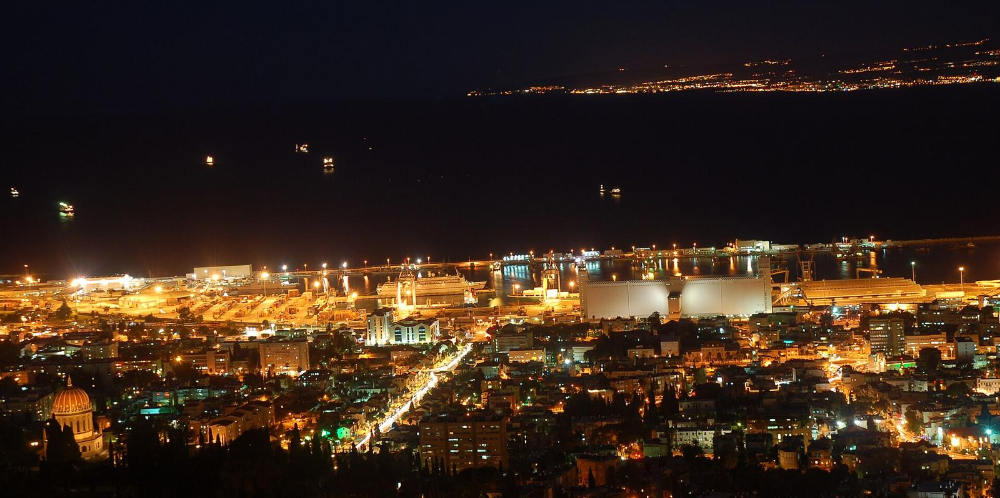

ערן מולכוEran Molcho
תיווך נדל״ן בנשר ובחיפהReal estate in Nesher & Haifa
ערן מולכו – מתווך נדל״ן בעיר נשר וחיפה. המשרד בשדרות מוריה 125.Eran Molcho, real-estate agent for Nesher and Haifa. The office is at 125 Moriya Avenue.
5.0בגוגל · 29 ביקורותon Google · 29 reviews
מדברים ישירות עם ערןYou talk to Eran himself
קונים או מוכרים דירה בנשר או בחיפה? מתקשרים ישר לערן.Buying or selling a flat in Nesher or Haifa? Call Eran directly.
״ערן עשה עבודה מקצועית ובחריצות רבה.״“Eran did professional work, and worked very hard.”
- משרדOffice
- שדרות מוריה 125, חיפה125 Moriya Ave, Haifa
- עכשיוRight now
- דירוגRating
- 5.0 מ-29 ביקורות5.0 from 29 reviews
בין נשר לחיפהBetween Nesher and Haifa
שתי ערים על אותו הר, ומספר טלפון אחד.Two towns on one mountain, and one phone number.
א׳–ה׳ 8:00–21:00 · ו׳ 8:00–14:00Sun–Thu 8:00–21:00 · Fri 8:00–14:00

מה אתם מחפשים?What are you looking for?
בוחרים תווית, והתוכנית וההודעה לערן מתמלאות לבד.Pick a tag; the plan and the message to Eran fill in by themselves.
5.0
29 ביקורות בגוגל29 reviews on Google
״הביא לי עסקה טובה תוך עמידה בלוח זמנים צפוף מאוד והכל עם יחסי אנוש מעולים.״
“He got me a good deal on a very tight schedule, and all of it with excellent people skills.”
Yoni Bartov · translated from Hebrew
״ערן מתווך אלוף ומקצועי ביותר, אנחנו עובדים בשיתופי פעולה יחד הרבה ואני ממליצה עליו בחום גדול.״
“Eran is a champion agent and extremely professional. We cooperate a lot, and I warmly recommend him.”
Hodaya Cormian · translated from Hebrew
״מאוד נעים לשיחה. עזר למצוא דירה מעולה ולסדר הרבה דברים עם המוכרים.״
“Very pleasant to talk to. He helped find a great flat and sort out a lot with the sellers.”
אילון וינברגר · translated from Hebrew
״ערן ליווה אותנו בכל שלב עם סבלנות אינסופית, מקצועיות יוצאת דופן ויחס אישי שמרגיש כמו חיבוק.״
“Eran walked us through every stage with endless patience, rare professionalism and a personal touch that feels like a hug.”
לידור ארגמן · translated from Hebrew
״ערן מיקצועי, קשוב, מכיל, נהנתי מהתהליך איתו במכירת הבית.״
“Eran is professional, attentive and understanding. I enjoyed the process of selling the house with him.”
heli levy · translated from Hebrew
שאלות לפני שמתקשריםBefore you call
באילו אזורים ערן עובד?Which areas does Eran work in?
בנשר ובחיפה.Nesher and Haifa.
זה גם לקונים וגם למוכרים?Is it for buyers and sellers?
כן. בביקורות שלו בגוגל כותבים גם מי שמצאו דירה וגם מי שמכרו בית.Yes. His Google reviews come from people who found a flat and from people who sold a home.
איפה המשרד?Where is the office?
שדרות מוריה 125, חיפה.125 Moriya Avenue, Haifa.
מתי אפשר לדבר איתו?When can I reach him?
ראשון עד חמישי 8:00–21:00, שישי 8:00–14:00. בשבת המשרד סגור.Sunday to Thursday 8:00–21:00, Friday 8:00–14:00. Closed on Saturday.
אפשר פשוט לכתוב בוואטסאפ?Can I just send a WhatsApp?
כן, למספר 050-970-0717. התוויות למעלה מכינות לכם הודעה.Yes, to 050-970-0717. The tags above write the message for you.